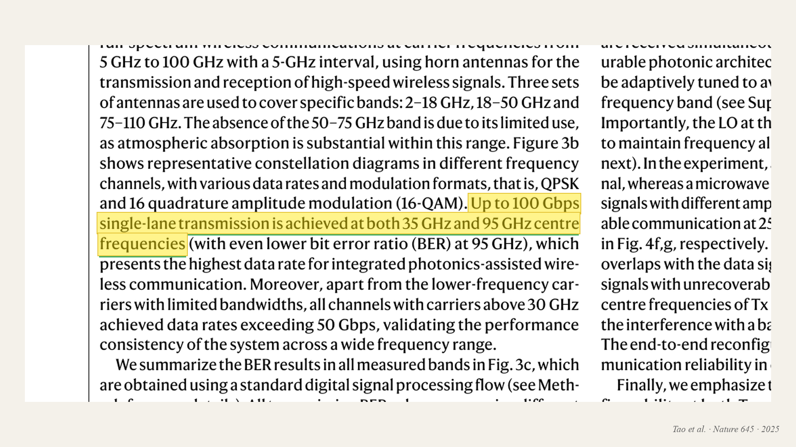
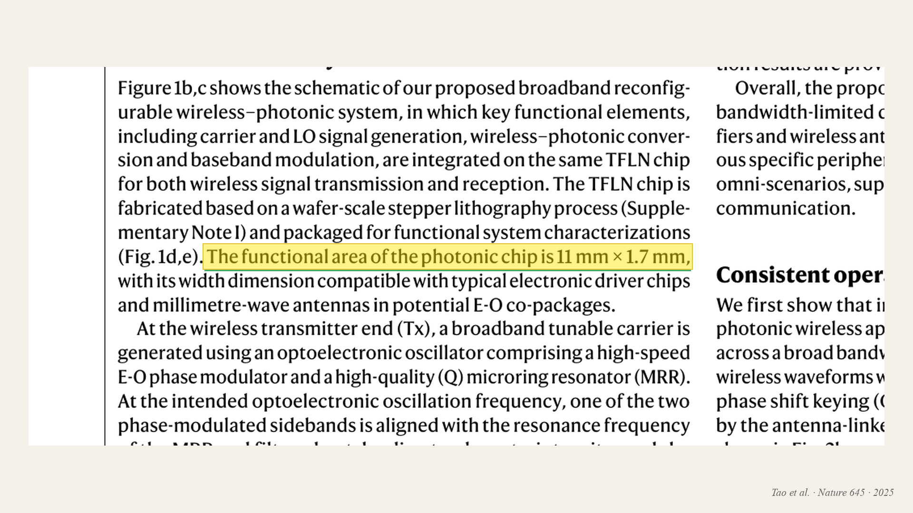
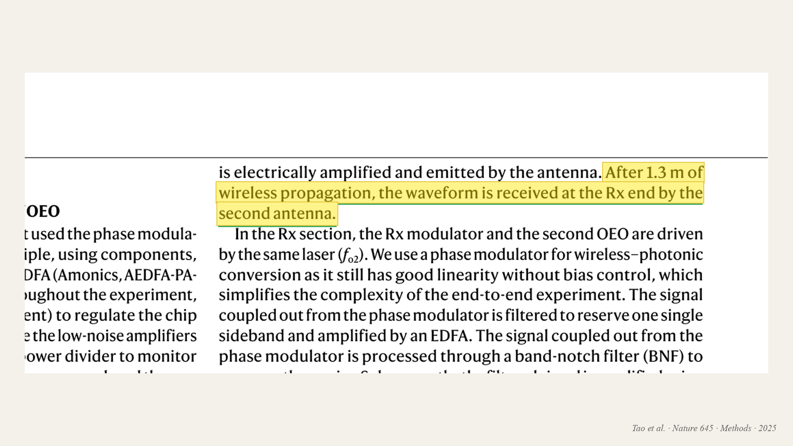
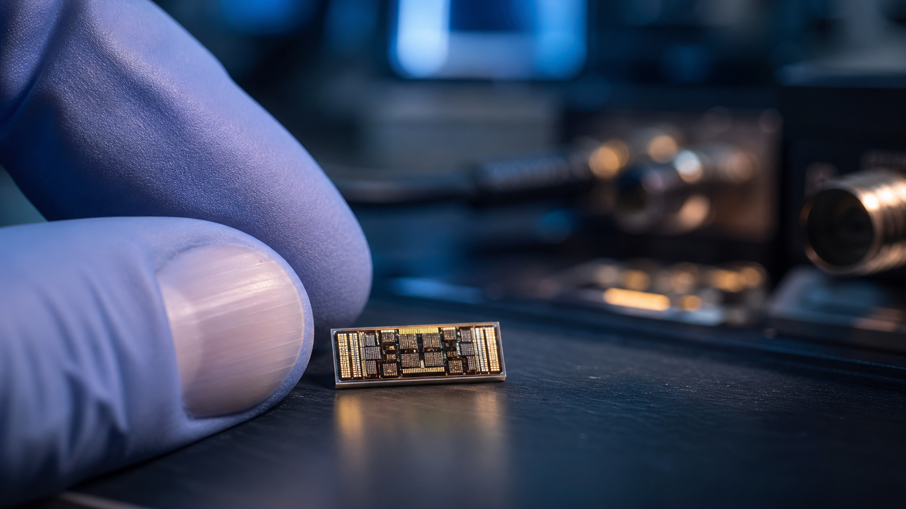

KA01 / THREE CLAIMS
SEPARATE RESULTS
CHINA'S 6G BREAKTHROUGH
THREE NUMBERS.
ONE MISLEADING STORY.

206+ Gb/s

11 mm

1.3 m
CLAIM 01 / SPEED
200+
GIGABITS PER SECOND
4K
A full movie in about one second

SMALLER THAN A FINGERNAIL
THE WIRELESS LINK: ABOUT FOUR FEET
ALL THREE ARE REAL
BUT THEY ARE NOT ONE RESULT.
200+
EARLIER SPEED HEADLINE
11 mm
THE NEW PHOTONIC CHIP
1.3 m
THE LAB WIRELESS PATH
THE BETTER QUESTION
WHAT WILL 6G ACTUALLY DO FOR US?
And what will it ask in return?
ONE QUESTION / FIVE CANDIDATES
THE 6G
IMPACT MAP
Every candidate must earn its place by changing ordinary life.
BY THE END:
AN ORDER.
ONE WILL MOVE
CLOSER TO YOU.
SPEED
REACH
INTELLIGENCE
SENSING
COORDINATION
WHEN 4G ARRIVED
DAILY LIFE VISIBLY CHANGED.
01
RIDE-HAILING
02
STREAMING
03
MOBILE SHOPPING
04
LIVE MAPS
5G
IMPRESSIVE SPEED TESTS.
But daily life often looked much the same.
FAST ≠ FELT
3 BILLION
PEOPLE EXPECTED ON 5G
THE REAL CHANGES HAPPENED OUT OF SIGHT.
Factories. Businesses. Private networks.
SPEED
THE HEADLINE NUMBER IS NEVER THE REAL STORY.
SPEED matters—but it starts near the outside.
SPEED STAYS OUTSIDE